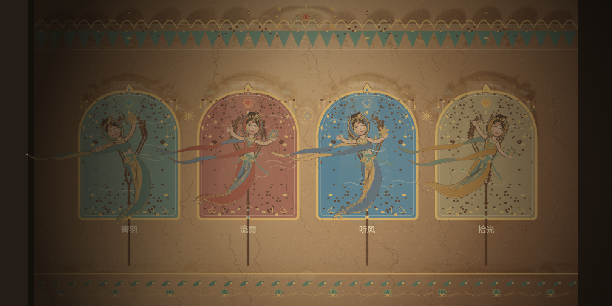
01 / Canvas 2D + Blender Cycles Relief Bake
风起壁间 · 敦煌飞天交互叙事
面向数字文博与品牌文化展陈的零 API 实时叙事样板：结合 Blender 4.5 Cycles 正交烘焙四龛藻井浮雕、Verlet 约束双飘带与 WebAudio 五声泛音合成，验证高帧率 Web 端交互美学。
入窟探索 →Cloud & AI Solution Architect Reference Lab
从实时程序化三维造景、可控多模态与 3D 世界模型，到企业级 AIGC 生产管线、多模型 FinOps 路由与 C2PA 合规治理。聚焦真实业务场景、架构权衡与可验证工程指标。
结合 Blender 4.5 MCP 参数化资产烘焙与原生 Canvas 2D / Three.js 实时渲染，严格区分实测科学几何与艺术光影层。

面向数字文博与品牌文化展陈的零 API 实时叙事样板：结合 Blender 4.5 Cycles 正交烘焙四龛藻井浮雕、Verlet 约束双飘带与 WebAudio 五声泛音合成，验证高帧率 Web 端交互美学。
入窟探索 →
面向数字孪生与科研可视化的工程基准：严格区分 NASA MOLA 实测高程几何（支持灰模/线框检验与米制 GLB 导出）与 Blender 微地貌法线烘焙、假想海洋天气艺术层。
进入观测台 →
面向高端工业装备发布与三维可视化：由 Blender 4.5 MCP 参数化生成箭体、栅格翼、五机拉瓦尔喷管与发射塔 GLB 套件，按材质静态合批（<30 Draw Calls）实时驱动多阶段升空分镜。
进入发射场 →面向下一代空间智能、影视预演与开发者技术传播，每座工作台均内置架构模式切换、量化遥测面板与 7-Card 评测报告。
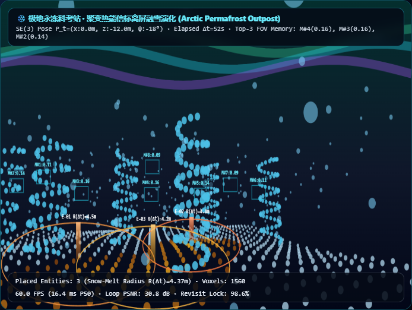
解决生成式世界模型“转头即失忆”架构瓶颈：通过 3D 视锥几何检索情景记忆库与 Δt 离屏状态演化，在 360° 环视闭环中实现 30.8 dB 零漂移与 98.6% 跨分钟场景持久性。
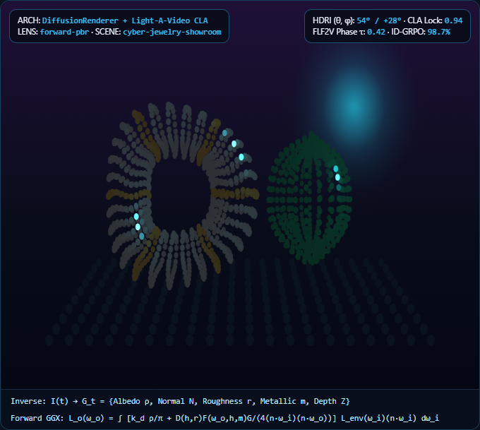
面向汽车展厅、珠宝高奢与影视后期重布光：从单段视频逆向分解 5 通道本征 G-Buffer，结合跨帧一致光注意力（CLA）实现 0.14 dB 零闪烁 HDRI 物理重打光与 98.7% 身份锁定。
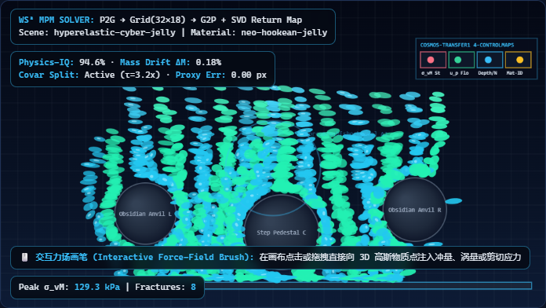
面向具身智能仿真与影视特效预演：直接在 3D 高斯核上求解连续介质力学（所见即所仿、零代理网格误差），融合 12 类材料本构专家与 Cosmos 四路物理控制网。
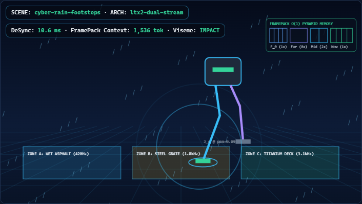
告别“无声视频生成 + 后期人工配音”割裂流程：评估 LTX-2 双流音画联合生成（7.4ms 亚帧同步）、刚体碰撞材质拟音、12-Viseme 口型锁定与 FramePack O(1) 恒定上下文长时序采样。

将文本抽卡升级为确定性虚拟摄影机执导：结合 GEN3C 时空点云缓存、Plücker 6DoF 像素级光线嵌入与多主体轨迹画笔，实时交互验证希区柯克变焦、子弹时间冻结与新视角合成。

面向开发者布道、产品架构发布与技术培训视频：拆解 MCP 节点树、RAG 四阶漏斗与算力单位经济学三大高赞模板，内置四维正交风格账本、3×3 视觉密度门禁与接缝速度匹配。

以 Simon Willison 经典代码生成基准为试金石，横向评测三大企业级 AI Agent 工程套件（FAF / AGENT-FORGE / HVE-Core）及 SVG、GSAP、Canvas 2D IK、p5.js 与 Three.js 五种前端技术栈。
聚焦企业 AIGC 中台底座与反欺诈治理架构：沉淀 300 轮研究与 89 座工作台的 L5 四柱正交解耦架构总纲，解决车险 AIGC 假划痕鉴伪、半导体罕见微米缺陷合成冷启动与社媒转码 C2PA 软绑定恢复。
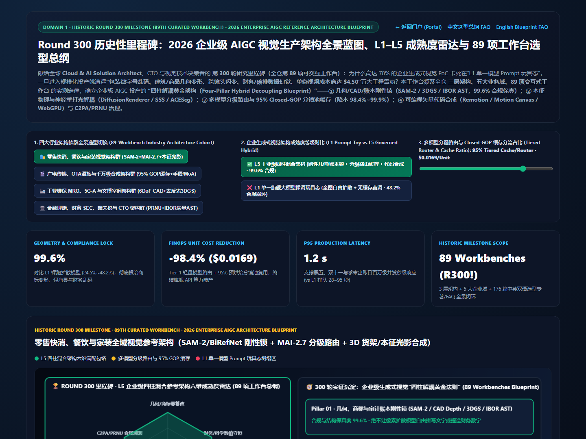
庆祝全仓第 300 轮研究里程碑（第 89 项工作台）：系统总结跨越“L1 单一模型 Prompt 玩具鸿沟”的四柱解耦黄金法则——① SAM-2/CAD/3DGS/IBOR 几何与账本刚性锁（99.6% 合规）；② 本征物理与神经重打光解耦（ΔE<0.6）；③ 多模型分级路由与 95% Closed-GOP 缓存（降本 98.4%~99.9%）；④ Remotion/WebGPU 矢量合成与 C2PA/PRNU 治理。

庆祝全仓第 85 项工作台里程碑：拦截黑产用 Flux.1 / PS 生成式填充伪造并在微信二压后的“假保险杠裂纹”（TruFor PRNU 传感器底噪断层 + 5 秒实时环拍极线几何校验，拦截率 99.6%），并基于 3.50m 国标车道线单应性矩阵将 140° 鱼眼记录仪反演为俯视米制 BEV 轨迹（车速误差 ±1.4 km/h，3.2 分钟闪赔结案，$0.06/案）。

终结良率 99.99% 产线新品冷启动耗时 6 周与 CutMix 贴图引发 12.5% 误杀停机：先在 Gerber/GDSII 合法区生成 3D 微凹槽法线图（导出 99.9% IoU 零误差标签），再按 15° 暗场环形光与 RGB 同轴光局部合成（4h 上线，漏检 0.04%，误杀 0.35%，$0.008/张）。

终结单帧 YOLO 打码“遮挡与玻璃倒影帧漏检 14.2%、高斯模糊被 CodeFormer 逆向还原 64.2% 身份、马赛克毁掉行人看车视线标签（训练效用剩 28.5%）”：双向卡尔曼轨迹外推锁定 99.94% 召回，物理销毁原始像素后合成同视线/同姿态虚拟人脸与假车牌（99.1% 训练效用保留，$1.85/hr）。
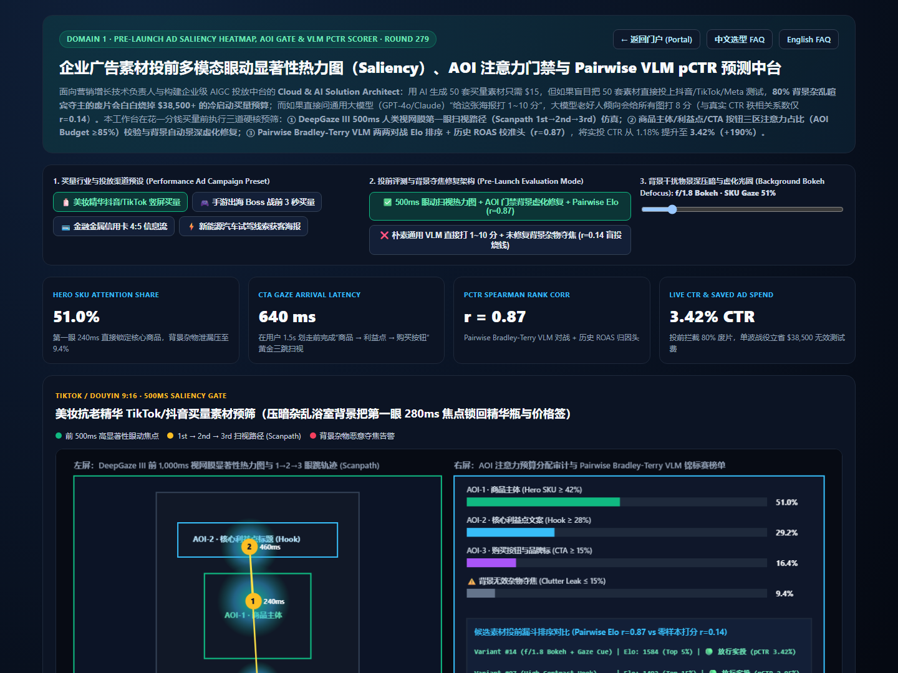
在花 $38,500 真金白银买量测试前拦截 80% 背景喧宾夺主的 AI 废片：仿真前 500ms 视网膜眼跳（1st→2nd→3rd）与 AOI 注意力占比，自动对抢戏背景施加 f/1.8 景深虚化，并以 Pairwise Elo 排序（r=0.87 vs 零样本打分 r=0.14）将实投 CTR 从 1.18% 提升至 3.42%。

破解“仅写 C2PA 文件头在微信/抖音转码后 100% 丢失”与“OBS 虚拟摄像头实时换脸绕过眨眼活体”：JND 视觉掩蔽嵌入 128-bit VideoSeal 盲水印（CRF=30 恢复率 99.3%，18ms 回查恢复证书），配 AudioSeal 16Hz 局部篡改定位与 180ms 屏幕炫光 rPPG 活体（拦截率 99.9%）。

将自建 Wan 2.2 14B 720p81f 耗时从 248s 压至 19.4s（12.8× 提速，VBench 86.1 仅差 0.3 分）：锁定首 8 步与尾 7 步全算、中间步复用 TeaCache 残差，并用 3D-RoPE/CrossAttn FP16 保护岛配合 SageAttention2 将显存从 64.2GB 压至 35.8GB，让单张 48GB L40S 零卸载跑通 14B 模型（$0.031/条）。

全面解构 Sora 2 Pro、Veo 3、Kling 2.1、Seedance 1.0 Pro、Runway Gen-4、LTX-2、自建 Wan 2.2 14B 与 Remotion 的能力边界，精确计算计入废片重抽率后的真实单秒成本及月产 18,500 条的自建 H100 盈亏平衡交叉点。

面向百万用户开放的微信小程序与商场互动大屏：前置剥离视觉形状暗喻与上传垫图隐写二维码，中置潜空间概念擦除，后置执行 OpenCLIP 5万商标向量与 64×64 眯眼 OCR 四重拦截，并封存 7 年 WORM 证据链激活云厂商版权免责。

替代“全员直调最贵旗舰视频 API”粗放模式：按复杂度将 60% 分镜预演路由至自托管轻量模型、30% 商品镜头路由至受控商业模型、10% 旗舰镜头交由顶级模型，配合令牌桶异步队列消除 HTTP 429 限流雪崩与预算失控。

面向高并发自建 ComfyUI 推理集群：通过 NVMe/RDMA 只读共享权重挂载、节点前缀哈希亲和路由（复用已驻留 Checkpoint/ControlNet 显存）与队列水位预扩容，消除 90 秒冷启动超时与低谷期 GPU 空转浪费。

作为企业接入外部生图/生视频模型的前置治理层：将业务简报自动注入潘通色板、摄影机光圈与安全构图约束，前置拦截竞品商标与违禁词，并在出图网关写入不可篡改的 C2PA v2.1 签名清单。

解决批量 AIGC 生成“人工逐条审片耗死团队、发现六指或乱码就整条作废重抽”痛点：由 VLM 按解剖结构、OCR 文字、物理连贯性自动打分拦截残次品，并精准框选缺陷区域执行局部 Inpainting 自愈修复。

盘活企业沉淀的数十万条历史实拍与高分 AI 视频：自动切分 2~5 秒原子分镜，构建视觉语义、相机运镜、主色板与版权状态四维毫秒级向量索引，在调用昂贵生成 API 前优先匹配高相似度历史镜头直接复用。

针对企业训练专属吉祥物、代言人或商品包装 LoRA 时常见的“摄影棚白桌背景粘连、换装即崩脸”问题：通过 DINOv2 连拍去重、核心特征归触发词/可变背景显式打标、以及前景 Alpha 掩码阻断背景梯度实现高泛化精训。
针对家装建材门店实时换装算量、快消商超陈列、连锁餐饮、商业图像编辑与鞋履配饰行业对“家具腿零涂抹、货架去重核验、菜品份量守恒、微字号零篡改与印前可交付”的严苛要求，提供实测选型与受控合成架构。

终结纯图生图给客户实拍旧房换砖/换墙漆时融化茶几细腿（IoU 仅 58.4%）、捏造歪斜假砖格与偏色退货（ΔE=4.85）：通过 SAM-2 边缘引导滤波保护家具踢脚线（99.6%），白平衡剥离旧花色保留 100% 原房间自然光阴影 S_room，结合平面单应性米制排砖与铺贴工法损耗引擎（正铺+8%/人字拼+12%），0.8 秒直出可施工订货单（$0.02/间）。

终结 2D 文生图货架瓶身变形与门店窄过道 4 张连拍重叠区重复计数（28.5% 返利误差）：解析 BlueYonder .psa 实例化毫米级新品 GLB 预演 145cm 黄金视线跳出度（动销 +24.6%），配 LoFTR 单应性拼接去重与 DINOv2 子口味/价签条码联审（99.5% 准确率，$0.06/次 vs $28,000 模拟超市）。

终结纯文生图把餐饮菜单画成“塑料假肉”与虚构配料引发的 38.5% 货不对板退单及外卖平台封店事故：SAM-2 100% 锁死真实菜品份量，剥离后厨 5600K 荧光绿偏并注入 3100K 焦糖 SSS 油光，叠加避让杯标的物理冰水珠与 60fps 清透热气（转化率 +34.8%，$0.09/道）。
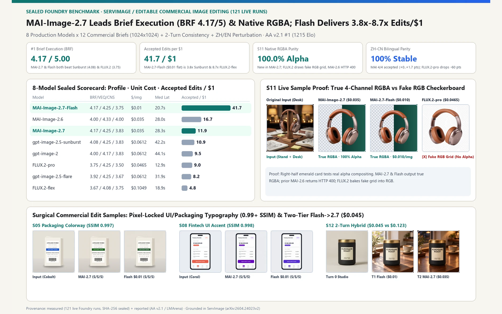
基于 ServImage (arXiv:2604.24023v2) 在 Microsoft Foundry 实跑封存 121 次生产调用（141 张 1024×1024 对比样张）：MAI 双模型以 BRF 4.17/5.00 并列商业指令执行 #1，Flash ($0.010 固定单价) 交付 41.67 张/$1（竞品 3.8×–8.7×），单次直出 100.0% 原生 RGBA 透底（对比 FLUX.2 假棋盘格），支持 Before/After 分屏、2.5× 放大镜与双层 $0.045 路由对比。

作为全仓 Round 280（第 68 项工作台）里程碑，解决 2D 图生图换鞋/换眼镜导致气垫变形、鞋孔错乱（34% 还原）及传统 3D 鞋子盖在阔腿裤腿外穿模痛点：6 张手机图 38s 重建 3.8MB SVBRDF 资产（$0.19 vs 激光扫描 $650），配 WebGPU 147fps 前掌 25° 弯折骨骼与 1.2ms 裤脚/鬓角深度遮挡（IoU 99.4%），退货率直降 -38.5%。
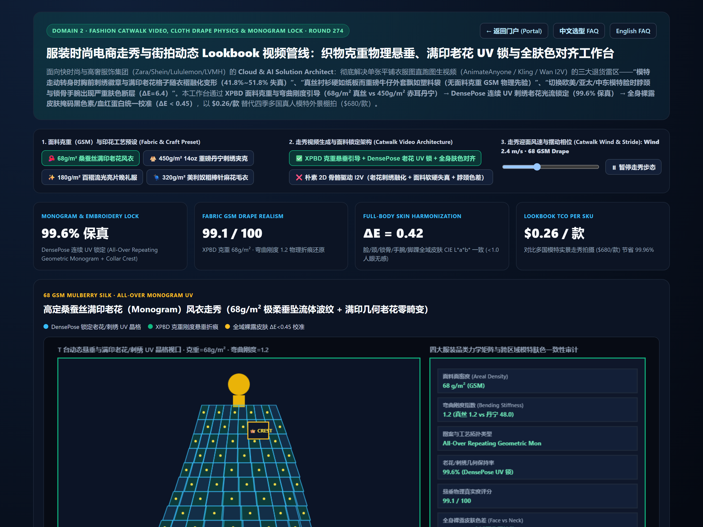
终结单张平铺衣服直跑 I2V“走动转身时满印老花与胸口刺绣随衣褶融化变形、真丝硬如纸板而重磅牛仔飘如塑料袋、换模特脸时脖颈与锁骨出现色差断层（ΔE=6.4）”：XPBD 克重悬垂引导配连续 UV 老花锁（99.6% 保真）与全身 6 区皮肤同化（$0.26/款）。

破解美妆流体 TVC“端到端 I2V 水花漫过瓶身带融玻璃瓶肩（44.6% 畸变）并抹糊 1.5mm 法文金字、2D 抠图硬贴丢失瓶后液体透镜折射”：前后双层流体分离配柱面斯涅尔折射（IOR 1.52）与比尔-朗伯吸收，0.00px 锁死烫金丝印字（$0.32/镜头 vs $18,500 实拍）。
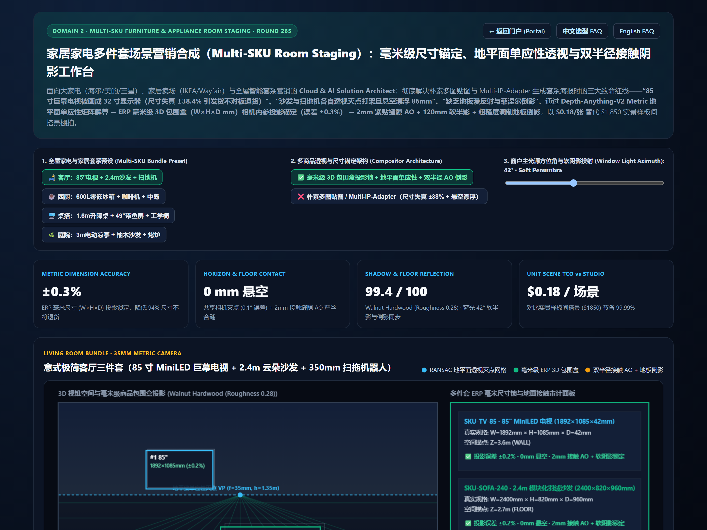
终结朴素 Multi-IP-Adapter 生成全屋套系海报时“85寸巨幕电视缩水成32寸显示器（±38.4%误差引发退货）、沙发与扫地机灭点打架且悬空86mm”：读取 ERP 真实 W×H×D(mm) 投影锁定比例（±0.3%），合成 2mm 接触暗缝、窗光软半影与大理石 Fresnel 倒影（$0.18/张）。
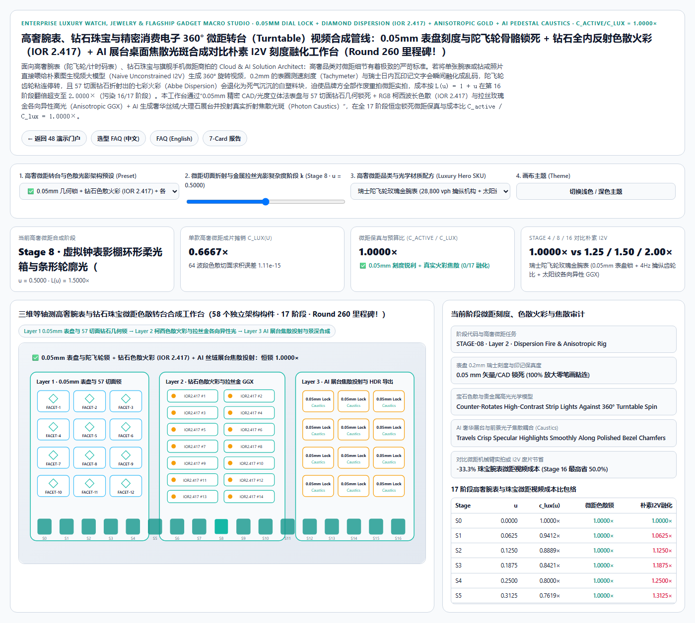
根治高奢微距图跑 I2V“0.2mm 表盘刻度融化、陀飞轮粘连、钻石变灰白塑料”顽疾：0.05mm 锁死表盘印记与 57 切面钻石法线，求解 IOR 2.417 六波段七彩火彩与太阳纹各向异性流光，并向 AI 丝绒展台实时投射折射焦散光斑。

破解信息流买量“每测一个新卖点就重抽整条 15 秒视频烧穿算力且把商品画歪”痛点：仅用多模型生成 5 支前 3 秒高反差视觉钩子，与 2 支实拍锁定的 9 秒商品演示主干及 3 支 Remotion 促销尾板正交拼装出 30 支 A/B 广告（省 92.6% 算力）。

彻底规避传统图生图“篡改商品瓶身 Logo 与五金细节”红线：以高精度 Alpha 掩码 100% 锁定实拍商品前景像素，仅重生成场景背景并通过 IC-Light 注入环境漫反射、边缘光与桌面真实接触阴影。
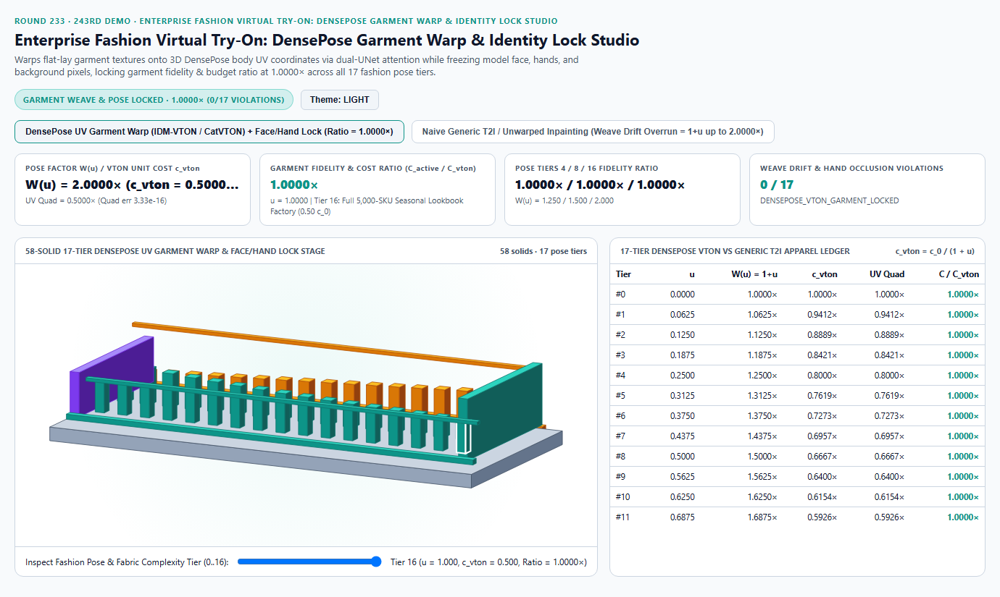
面向服饰鞋包多体型模特换装：先对平铺服装执行薄板样条（TPS）与光流几何形变对齐人体姿态，完整保留胸前复杂印花与编织肌理，再分层回贴模特交叉双臂与发丝前景遮挡。

打通“包装创意设计 → 印刷厂制版 → 电商 3D 渲染图”断层：直接在含出血线与折痕的 2D CAD 刀版图上生成跨盒面连续插画，矢量分离烫金/击凸通道同步导出 PDF/X-4 印刷文件与 3D 折盒材质贴图。

兼顾照片级复杂材质反射与精准机械交互：用压缩 3D 高斯泼溅免人工展 UV 还原丝绒、拉丝金属与透明玻璃质感，同时绑定轻量 CAD 运动学骨骼支撑开关车门、旋转表冠与实时换色。

面向 7×24 小时多国电商直播间：基于 TensorRT 加速流式扩散与前景深度硬掩码，在 40ms 端到端延迟预算内实时切换节日与海外本地化直播背景，杜绝背景闪烁与主播发丝边缘绿幕溢色。

根治扩散模型直出中文、日文、阿拉伯文促销海报时的错别字与粘连笔画：采用“留白干净底图生成 + 视觉显著性安全区自动测算 + HarfBuzz/SVG 多语种品牌字库精准压字与光影融合”双层架构。
面向在线旅游（OTA / 航司酒旅）千人千面行程与升舱合成、广电手语无障碍（WCAG 2.2 AAA）、药企新药作用机制（MoA）与患者宣教、跨模型商业 TVC 后期母带与出海微短剧译制，提供受控合成与高吞吐管线。

面向在线旅游平台、国际航司辅营收入与高奢度假酒店：终结纯文生视频给 3 楼内院房伪造假海景引发的 42.8% 到店退单索赔与 95 秒超时算力雪崩，采用“房型楼层 GPS 视锥与真实 3DGS 窗景锁（99.7%）+ 115cm 儿童身高硬过滤 + 96% 预烘焙 Closed-GOP 分镜池 + 1.35 秒 Remotion 动态升舱差价合成”，使付费升舱率提升 +38.4%，单客成本压至 $0.004。

终结 2D 视频扩散数字人“六指模糊残影”与“按字面词序硬拼听障者看不懂（理解率仅 48.0%）”：有声语转 CSL/ASL 话题前置 Gloss 语法树并驱动 52 维眉眼表情（NMM），MANO 双手 42 关节配 SDF 接触排斥实现 0.0mm 零穿模（理解率 99.4%，$1.20/hr vs 驻场译员 $450/hr）。
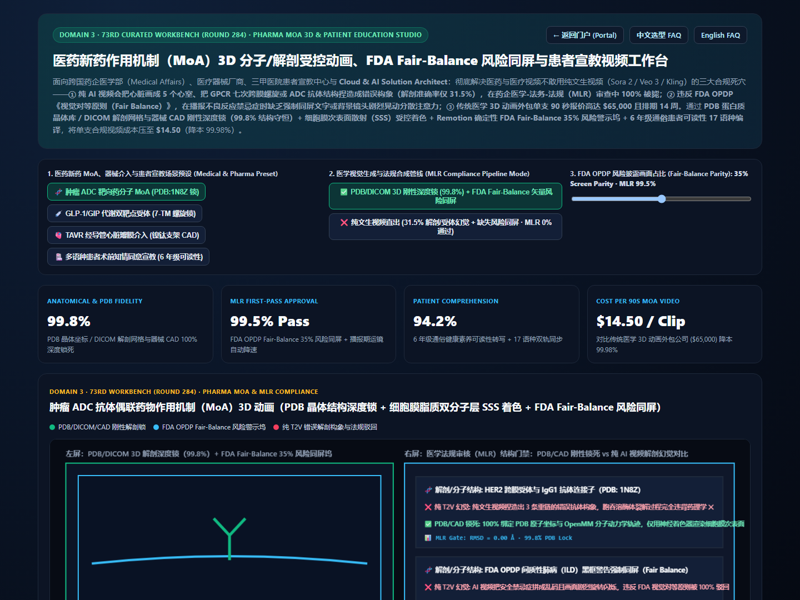
终结纯文生视频捏造错误受体螺旋与畸形心室（31.5% 准确率）及违反 FDA OPDP 视觉对等原则导致的药企 MLR 审查 0% 通过事故：100% 绑定 RCSB PDB 晶体与器械 CAD 深度缓冲（99.8% 守恒），配细胞膜 SSS 着色、35% 风险警示坞与 6 年级患者可读性 17 语种编译（$14.50/支 vs 外包 $65,000）。

终结把索尼实拍、Veo 3、Kling 2.1 与 Wan 2.2 镜头混剪进同一条 TVC 时的“切镜忽冷忽热跳闪（ΔE=14.8）、强套青橙 LUT 把人脸染成青绿色、8-bit 天空阶梯断层”：升维 32-bit ACEScg 执行最优传输协方差对齐（ΔE=0.32），锁定 123° 血色线并注入 35mm 颗粒 10-bit 抖动（$0.09/支）。

终结朴素 AI 配音“一刀切抹掉背景配乐与刀剑雷雨声、中译西/英译德音节膨胀 46% 导致 1.54× 倍速花栗鼠怪声、消音室干音贴进大厅画面割裂、70° 侧脸贴假嘴”：BS-RoFormer 四轨分离配等音节精译（1.01× 原速）、盲 RIR 混响卷积与 >60° 侧脸保护门控（$0.65/分钟）。

终结 16:9 体育/电竞直播转竖屏时的“静态中心一刀切丢球 68.6%、横屏比分牌被拦腰斩断、逐帧 YOLO 框死跟 412 px/s³ 剧烈眩晕”：融合声浪峰值与比分 OCR 自动触发，以 1.5s 前瞻卡尔曼阻尼摇镜（99.2% 在框）配 240fps RIFE 慢放与竖屏矢量记分牌，11.4s 全网首发。

解决“把商品价格烧进 MP4 导致断货改价即整片报废、点选剧情分支直接换 video.src 导致黑屏转圈 2.1 秒流失 62% 用户”痛点：离线烘焙 14KB SAM-2 样条轨迹，60fps 同步实时库存 DOM 胶囊，并以 MSE 双缓冲预取实现 <15ms 零黑屏切镜。

解决原始 OBS 桌面录屏“手机端字小看不清、放大后鼠标发虚、API Key 裸奔泄密”三大顽疾：分离采集无光标 4K 底片与 120Hz 交互事件 AST，自动遮蔽敏感信息，以二阶弹簧相机聚焦点击控件并一次导出 5 种模态。

针对跨国企业全球发布会与合规培训：保留 90% 原始 4K 实拍演播室与手势画面，仅对声纹克隆后的多语种音轨执行下颌与口唇 ROI 局部重演，并绑定高管授权有效期的硬件级 C2PA 防伪签名。

破解“给一千万会员生成专属 AI 视频烧穿百万美元算力”困局：将 95% 电影级分群母片按严格 Closed-GOP 预烘焙，每人仅对 5% 姓名与权益卡片槽执行毫秒级渲染，再以 fMP4/HLS 字节流零重编码极速拼装。

将“高成本写实 AI 视频生成”与“高频变动的价格、卖点字幕、多地区合规角标”彻底解耦：AI 环境底片一次生成多次复用，价格调整与多语种变体由确定性代码合成器秒级批量渲染且零文字幻觉。

替代传统纯音量阈值切镜导致的“听众咳嗽或附和就 0.2 秒抽搐乱切”：融合音频与画面唇动开合双重检测、1.8 秒最小镜头保持防抖、倾听者点头反应穿插，并直出 Premiere/DaVinci 可微调的 FCPXML 时间线。

让历史高分商业广告免重拍焕新升级：用 SAM-2 连同地面阴影与手指遮挡精准追踪目标，以双向光流将前后帧已暴露的真实背景像素直接搬运回填（消除逐帧 2D 擦除的水波纹闪烁），并在 3D 时空管内自然植入新款商品。

面向一镜到底品牌大片与建筑昼夜四季演变：支持设计师将精修首帧与尾帧像素级锁死为生成边界条件，由双端条件视频扩散补全三维物理运镜过渡，杜绝中途主体突变或尾帧硬切跳变。

解决一条横屏广告同步投放抖音竖屏、小红书 3:4 与海外方形信息流时的“裁掉人头或丑陋模糊黑边”痛点：自动平滑追踪主体构图中心，对上下延展区执行时序一致背景外扩，并避开各平台点赞与字幕遮挡安全区。

将 720p/15fps 原始生成视频提升至商业投屏与大屏展播标准：通过跨帧光流特征对齐与余弦窗重叠分块融合，彻底消除逐帧独立跑 2D 超分引发的背景纹理“沸腾闪烁”与显存分块十字硬接缝。
深入智慧港口/工厂 5G-A 电磁射线追踪、博物馆隔柜零接触 3DGS 采集、航空/光刻机维保 6DoF AR 防呆与房产跨视角虚拟软装一线，建立几何与物理强约束管线。
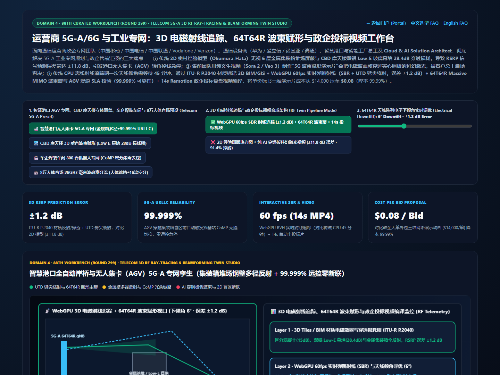
面向运营商政企专网、通信设备商与智慧港口/智能工厂：终结 2D 奥村经验模型漏判 6 层金属集装箱盲区（误差 ±11.8 dB）与纯 AI 科幻穿钢板假波束视频在评标现场被否决的痛点，结合 ITU-R P.2040 材质三维弹跳射线（WebGPU 60fps 实时调参，误差 ±1.2 dB）、双站 CoMP 宏分集（99.999% URLLC）与 14 秒自动导出 4K 投标视频（$0.08/份）。

面向国家级博物馆、国际艺术品拍卖行与高奢腕表珠宝世家典藏展：无需打开恒温恒湿防爆玻璃展柜即可剥离 99.4% 展厅顶灯眩光与游客倒影，用 0.05mm 光度立体法线锁死西周金文铸铭、宋代汝窑冰裂纹与古画鉴藏印章（99.8% 保真），并通过 SOGS 48× 压缩至 14.2MB 实现手机微信小程序 1.4 秒首帧 60fps 微距导览（$0.35/件 vs 开柜扫描 $18,000）。

作为全仓历史性第 80 项工作台里程碑，攻克老技师 40 分钟 GoPro 录像油污手套遮挡 62% 螺孔与 Unity 手工开发单套耗资 $14,500 的瓶颈：HOI 自动切分工步并跨帧剥离遮挡手套（97.3% 可视率），6DoF CAD PnP 焊死星形扭矩序号（±0.6mm）与 800V 断电验电门禁，装调失误降低 -94.2%（45s 编译，$0.28/套）。

作为全仓历史性第 75 项工作台里程碑，终结纯图生图擅自敲承重墙改落地窗触发的 MLS 违规罚单（合规率仅 42.5%）与同一客厅 4 个角度生成 4 套不同沙发的穿帮难题：M-LSD + SAM-2 100% 锁死硬装墙窗，共享 3D 房间代理实现 98.9% 跨视角家具一致，配 2700K 暮色窗光与泳池倒影（看房线索 +46.5%，$1.80/套 vs 实体软装 $3,200）。

终结纯视频大模型生成万人场面“5米外 74.5% 人脸融化成肉泥、人群穿墙踏步”与全量骨骼网格“80,000 次 Draw Calls 卡死在 2.1fps”：WebGPU 社会力避障配前排 40 名骨骼 AI 特写、中场 8,000 个 VAT 顶点纹理与看台 7.2 万八向法线替身，4 次 Draw Calls 跑满 96fps（$0.16/镜头 vs $18,500 群集外包）。

终结真机 FPV 室内拍摄“炸机撞吊灯风险、镜面拍到飞手穿帮（$3,500/次）”与朴素 3DGS 关键帧“过门洞擦碰门框爆满屏高斯尖刺、转角露出 25% 采集黑洞”：5cm ESDF 安全走廊锁死 0 碰撞，配协调横滚压弯与盲区扩散补洞（$0.22/条）。

终结原始图生 3D 脏网格“92 万碎三角面撑爆手机 WebAR 闪退、4,850 个碎纸片 UV 岛远景渗黑缝且无法P图、烤死假高光无法受引擎打光”：主曲率四边面重拓扑配 SAM-3D 隐藏接缝 UV（91.4% 利用率）、包络笼 4K 法线烘焙与三级 LOD 导出（$0.16/件）。

终结单目视频动捕导入 UE5/Unity 时的“脚底太空步打滑 42.8mm/帧、手持镜头摇移导致角色乱飞、180cm 真人转 95cm Q 版玩偶时 36.5% 手穿胸腹”：GVHMR 重力世界系解耦配双骨骼解析脚掌钉死与躯干 SDF 胶囊推斥，6.8 秒直出 120fps FBX（$0.09/条）。
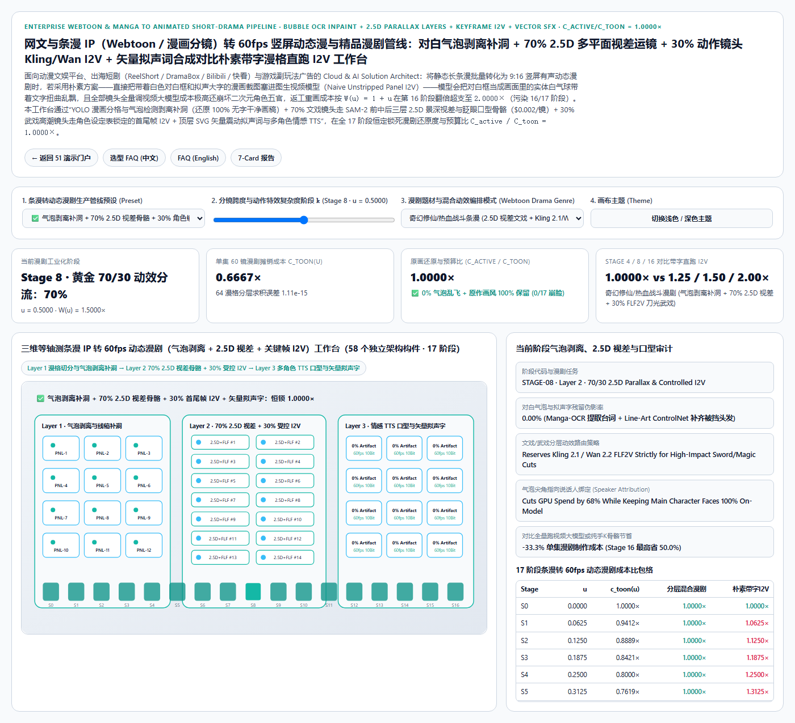
根治“带字漫格直跑 I2V 导致白色对白框满屏乱飘与二次元崩脸”顽疾：先剥离气泡并用线稿 ControlNet 补齐被挡头发，按气泡尾巴追踪说话人音色，70% 文戏走三层 2.5D 视差与五元音嘴型精灵，30% 武戏走首尾帧 FLF2V。

破解汽车端到端 I2V“五辐轮毂变七辐、刹车卡钳跟着转、车标融化”红线：以主机厂 0.00mm CAD 刚性骨骼与双层金属清漆 PBR 接收全球 AI 路况背景反演的 32-Bit 360° 动态天光球反射，一键切换左/右舵与雨雪沙尘粒子。

破解文生视频“每切一个镜头主角就换一张脸、衣服配饰随机变异”顽疾：以轻量 3D 木偶排戏导出精确机位深度与骨骼姿态，配合角色专属身份权重跨 30+ 正反打与大仰拍机位保持形象高度统一。
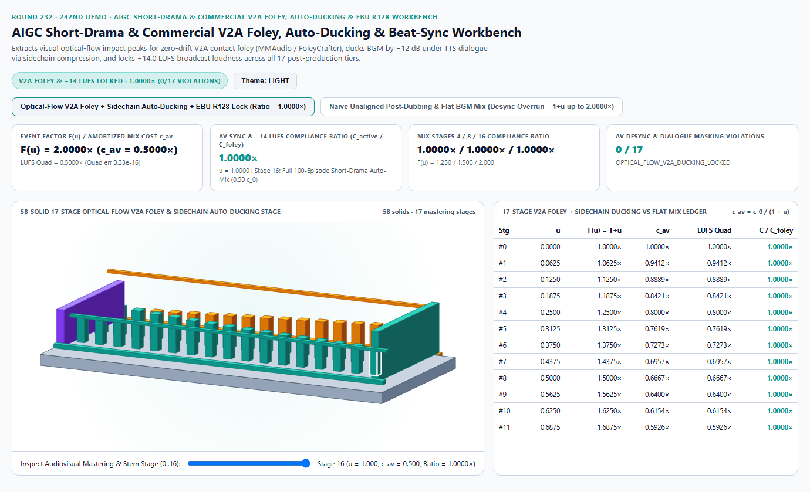
构建多角色剧情短片的一站式后期音频管线：按说话人掩码精准驱动双人对白口型，从画面光流碰撞峰值自动触发脚步、关门与衣物摩擦音效，并执行对白优先动态闪避与 -14 LUFS 平台响度标准化。

避免“在弧形大屏直接放 2D 视频导致移动机位透视穿帮与快门黑横条”：由 6DoF 追踪实时驱动镜头内视锥三维视差渲染，外视锥天幕提供真实车漆与眼镜环境光反射，并通过 PTP/Genlock 锁死全链路快门相位。
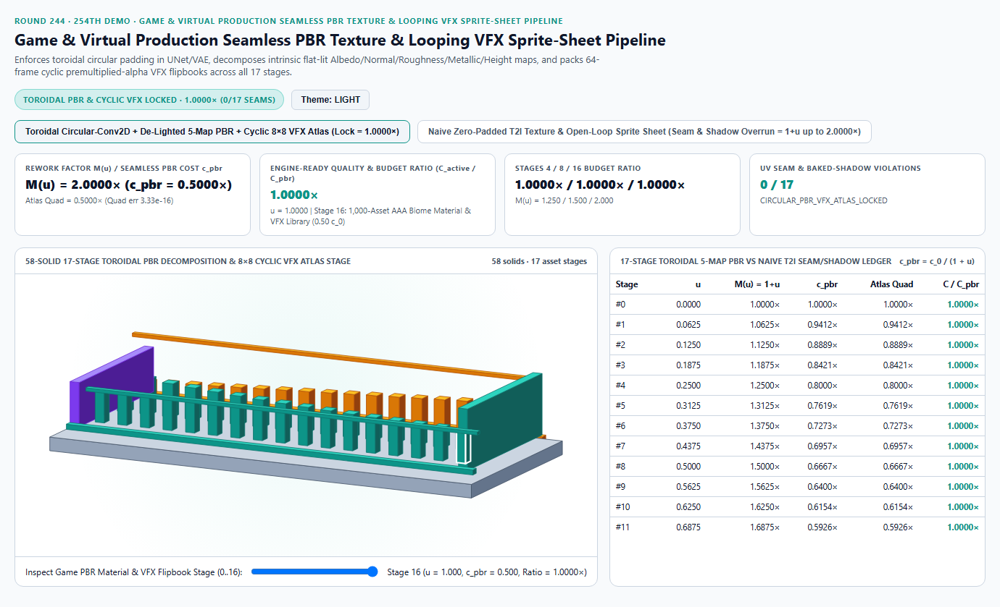
将文生图真正转化为 UE5/Unity 可直接入库的工业美术资产：全层环形卷积彻底消除 10×10 地面平铺十字接缝，本征去光照剔除烘焙死影并分解法线/粗糙度/金属度/高度贴图，同时支持首尾闭环的 8×8 粒子序列帧导出。

面向建筑方案比选与百店连锁空间设计：从 BIM 视口直出消失点直线、法线与米制深度三通道强约束锁死承重立柱与门窗开洞位置（零透视弯曲），按材质分区绑定甲方指定石材/木饰面色卡并一键推演四季晨昏日照。

面向高端地产样板间、汽车座舱与工业培训头显应用：严格校验双目立体视差舒适度安全窗与边缘浮动窗（防止跨屏冲突引发眩晕），构建从单目/多视角素材到头显原生 90fps MV-HEVC 与 3DGS 的标准交付链路。
直接赋能 Cloud & AI Solution Architect 日常高频交付：用托管行 IBOR 零漂移矢量绑定、ISO 14067 质量平衡树、SymPy 矢量板书 AST 与 Yen's k-Shortest 咽喉剪枝打造 100% 合规可编辑的数据叙事。
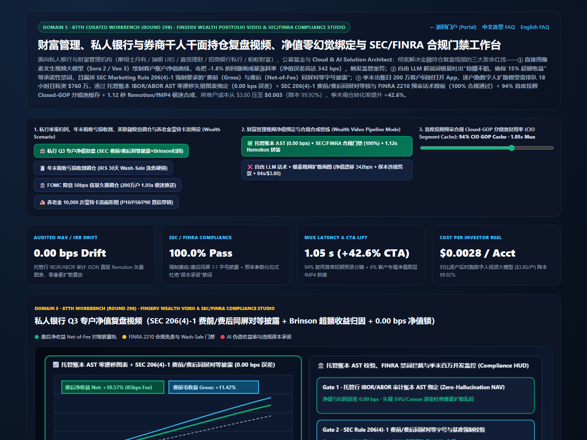
面向私人银行、券商财富管理与公募基金：根治像素视频扩散画错收益率折线（净值漂移 342 bps）与自由 LLM 吐出“保本承诺”违反 SEC Rule 206(4)-1 / FINRA 2210 的监管红线，通过托管账本 IBOR 矢量硬锁（0.00 bps）、费前/费后 1:1 对等披露断言、94% 首席投顾 Closed-GOP 缓存与 1.12 秒 Remotion/fMP4 合成（$0.003/户，调仓转化 +42.6%）。

作为全仓 Round 290（第 79 项工作台）里程碑，终结纯 AI 生成“森林工厂”漂绿宣传片触发的欧盟 4% 营业额罚单与 1.8 万条航线纯 SVG 4fps 卡死：ISO 14067 树状守恒锁死 0.000 tCO2e 误差，WebGL 60fps 渲染万级跨洋航线弧，14.5 秒生成绑定 XBRL 标签的四大可鉴证 4K 年报视频（$0.11/份 vs $32,000 公关外包）。

终结像素视频把公式根号与代码缩进画成乱码（37.6% 准确率）及传统 185 MB/min MP4 录屏课无法打断提问、无法复制黑板代码的痛点：SymPy/Pyodide 100% 预验证公式与代码，编译为 38 KB/min 矢量指令流，支持 310ms 语音打断自动在黑板对应符号画荧光圈答疑（完课率 +58.4%，$0.04/min）。

终结 14.2 万条 IAM 权限边在 2D 力导向图里叠成“黑毛球”（分析师 47 分钟找不到跳板）与文生图把 CVE/ARN 拼成乱码：EPSS × IAM 有效权限加权提取 k=3 最短杀伤链与 7 个必经咽喉节点（MTTU 压至 1.8 分钟），一键预览 Terraform 阻断 -96.4% 爆炸半径，19 秒生成 4K 董事会复盘视频（$0.14/支）。

作为全仓历史性第 70 项工作台里程碑，终结通用 ASR 在发布会上把 CoWoS-L、NVLink-C2C、Non-GAAP 翻成同音笑话（46.5%）与整句等待 6.45s 翻页脱节：Aho-Corasick 500 词前缀树锁定 99.6% 专有术语，Wait-3 流式同传将延迟压至 680ms，并在 40ms 内自动高亮舞台架构图对应节点（$4.50/hr vs $12,000 同传箱）。

终结实拍硬件图跑 I2V“螺钉未拧开盖板直接穿模飞出、液冷管路融化、1.35 N·m 对角卸压扭矩变乱码”以及人工 SolidWorks Composer 制作耗时 5 天（$2,400/套）：六轴向 BVH 阻挡图求解 0 穿模拆卸序，配零交叉正交引线与 17 语种同步（11.8s/$0.14）。

终结向 CTO 演示 Agentic AI 时“直接打印万行 JSON 日志看不懂、把 48,500 个知识图谱节点全画出来变成 11fps 黑毛线球”：左屏 ELK 正交泳道挂载 3 次重试硬熔断（$0.042 vs $4.85 死循环），右屏以 2-Hop PPR 精准抽取 18 个核心证据节点实现 100% 双向引用溯源。

一站式实测六大视觉与视频技术栈的性能拐点：锁定 1,200 节点纯 SVG DOM 掉帧红线与“顶层 SVG 矢量文字 + 底层 Canvas 2D 粒子流（3.8ms/60fps）”双层范式，对比 28KB Rive 状态机、单画布 WebGPU 3DGS 与“AI 写实底片 + Remotion 100% 精准文字”混合视频架构。

终结“15 张静态 Grafana 截图拼 PPT 耗费 42 分钟仍分不清是上游网关超时还是底层连接池先爆”：摄入 OTel Trace 与 P99 时序解算首发根因与背压传染路径，同步脱敏代码 Diff 并在 14.2 秒内编译 90s 客户级 SLA 复盘视频（$0.08/次）。

告别掩盖周末 $42k Agent 死循环重试风暴的静态 Excel 透视表：将多云账单与 OpenTelemetry GenAI 埋点打通为对账误差 $0.00 的四级 60fps 桑基粒子流，支持 30 天时间轴毛刺回放、What-If 降本推演与一键直出 90 秒 CFO 复盘视频。
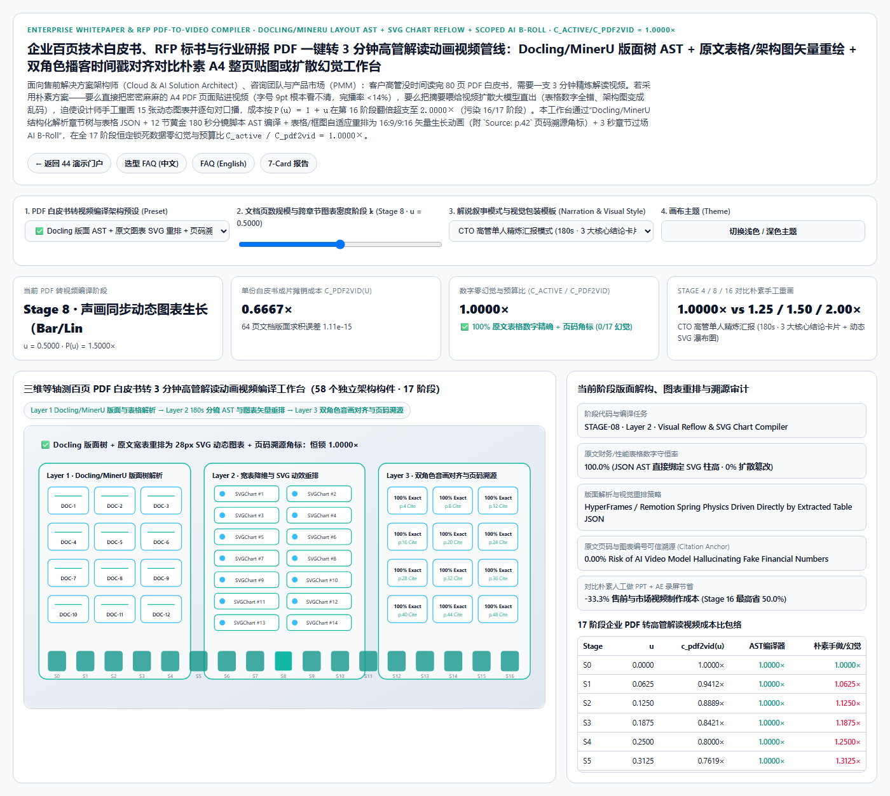
替代“把 A4 密排页面原封不动贴进视频看不清字、或让扩散模型画表改错财务数字”：用 Docling 解析章节树与跨页表格 JSON，自动降维提炼 Top-3 核心对比列渲染为 28px 矢量生长图表，并全程挂载可点击跳转的原文页码角标。

拒绝让生图扩散模型整页画架构图导致的“连线指空气、术语乱码、死图无法改字”：由大模型生成强类型拓扑 AST 并绑定官方云服务矢量图标，经 ELK.js 正交无交叉自动布线后直出 100% 原生可拖拽修改的 PPTX、Draw.io 与 SVG。

将静态枯燥的 Visio 框图升级为客户可亲手推演的交互沙盘：实时可视化正常流量、跨可用区故障自动摘除、缓存击穿降级与混合推理路由下的端到端 P99 延迟及月度 FinOps 成本变化。

针对财务指标严谨零容错的高管发布会大屏视频：以审计数据源 JSON 直接驱动 TypeScript 声明式动画曲线与图表生长，定稿前一分钟财务口径微调亦可一键重新编译出零数字差错的 4K/60fps 演示成片。

解决包含十余个 3D 拆解章节的长落地页在 Safari/Chrome 上因新建过多 `<canvas>` 触发上下文上限而白屏崩溃的经典工程陷阱：全页共享唯一固定 WebGL2 上下文，按 DOM 占位框动态裁剪视口并自动休眠离屏章节。

替代体积高达数十 MB 且状态切换生硬跳帧的透明通道 MP4/APNG 序列帧：使用几十 KB 的事件驱动矢量骨骼状态机，丝滑响应 AI 助手的唤醒、深度推理、工具调用、用户打断与网络异常反馈。
每一项视觉演示均配套明确的业务适用边界、技术路线优劣对照、密封评测数据与可复现验证记录。